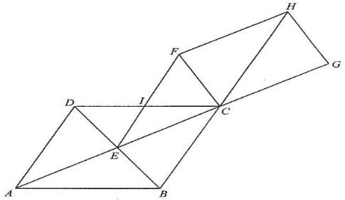

HKDSE 2024 · Paper 2 · Q21Rhombus, Rectangle & Congruence
Rhombus ABCDRectangle CFGHLines AC, BDSegment IFCentre E
Question. In the figure, $ABCD$ is a rhombus. The diagonals $AC$ and $BD$ meet at $E$.
Let $F$ be a point such that $EFCH$ is a rectangle, where $F$ and $H$ lie on $BC$ produced
and $DC$ produced respectively. Let $I$ be the point of intersection of $AC$ and $FH$.
Which of the following must be true?
I. $\;CI = FI$
II. $\;\angle ABE = \angle GCH$
III. $\;\triangle ADE \cong \triangle HCF$
A. I and II only B. I and III only
C. II and III only D. I, II and III

Figure (original exam diagram)
STEP 1 · Set up the angles
Let $\angle FCH = x$ and $\angle GCH = y$. Since $CFGH$ is a rectangle,
$\angle FCG = 90^\circ$, so
$$x + y = 90^\circ .$$
Everything follows from this one relation.
STEP 2 · Angles around the rhombus
Alternate Angles\(\angle IFC=\angle FCH=x\)\(BH // EF\), so the transversal \(CF\) makes alternate angles equal, giving \(\angle IFC=x\).
Because $BH // EF$ (opposite sides of the rectangle), alternate angles give
$$\angle IFC = \angle FCH = x .$$
Vertically opposite angles give
$$\angle BCE = \angle GCH = y .$$
As diagonals of a rhombus bisect the angles,
$$\angle DCE = \angle BCE = y .$$
Also $\angle FCD + \angle DCE = \angle FCG = 90^\circ$, so
$$\angle FCD = 90^\circ - y = x = \angle IFC .$$
STEP 3 · Statement I is true
We just found $\angle IFC = \angle FCD = x$, i.e. the base angles of $\triangle IFC$ are equal.
Hence the opposite sides are equal:
$$CI = FI .$$
So Statement I is true.
Equal base angles ⇒ isosceles triangle.
STEP 4 · Statement II is false
Diagonals of a Rhombus\(AC\perp DB,\quad \text{each diagonal bisects the vertex angle}\)\(\angle CEB=90^\circ\) and \(BD\) bisects \(\angle ABC\), so \(\angle CBE=90^\circ-y=x\).
The diagonals of a rhombus are perpendicular: $AC \perp DB$, so $\angle CEB = 90^\circ$.
By the angle sum of a triangle,
$$\angle CBE + 90^\circ + y = 180^\circ \;\Rightarrow\; \angle CBE = 90^\circ - y = x .$$
Since $BD$ bisects $\angle ABC$, $\angle ABE = \angle CBE = x$.
But $\angle GCH = y$, and $x$ need not equal $y$ (e.g. $x=30^\circ,\;y=60^\circ$).
So Statement II may not be true.
STEP 5 · Statement III is true
Properties of a rhombus give $\triangle ADE \cong \triangle ABE \cong \triangle CDE \cong \triangle CBE$ (all four right triangles share legs $\tfrac12 AC$ and $\tfrac12 BD$).
Also $\triangle CBE \cong \triangle EFC$ (ASA: $CE$ common, right angles, $\angle BCE = \angle FEC$),
and $\triangle EFC \cong \triangle HCF$ (ASA: $CF$ common, right angles, $\angle ECF = \angle CFH$).
Chaining these,
$$\triangle ADE \cong \triangle ABE \cong \triangle CBE \cong \triangle EFC \cong \triangle HCF ,$$
so $\triangle ADE \cong \triangle HCF$ and Statement III is true.
STEP 6 · Conclusion
Only I and III must be true. The answer is B.
Answer: B. I and III only
PRACTICESimilar question — try it yourself
Question. \(ABCD\) is a rhombus whose diagonals \(AC\) and \(BD\) meet at \(E\). If \(\angle BCE=35^\circ\), find \(\angle ABC\).
Show the worked solution
Step 1. The diagonal \(AC\) bisects \(\angle BCD\), so \(\angle BCD=2\times35^\circ=70^\circ\).
Step 2. \(AB // DC\) with transversal \(BC\): co-interior angles are supplementary.